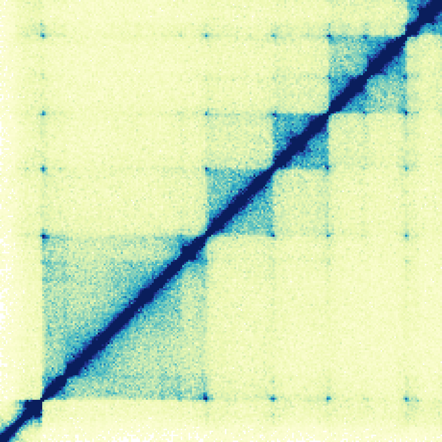
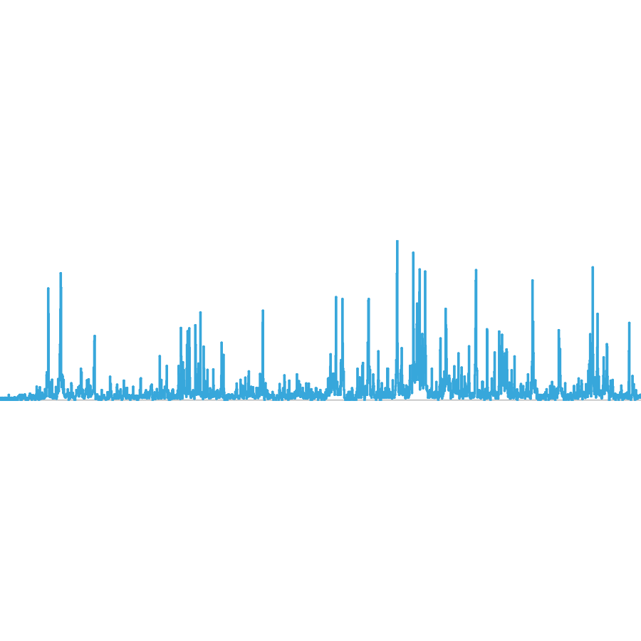
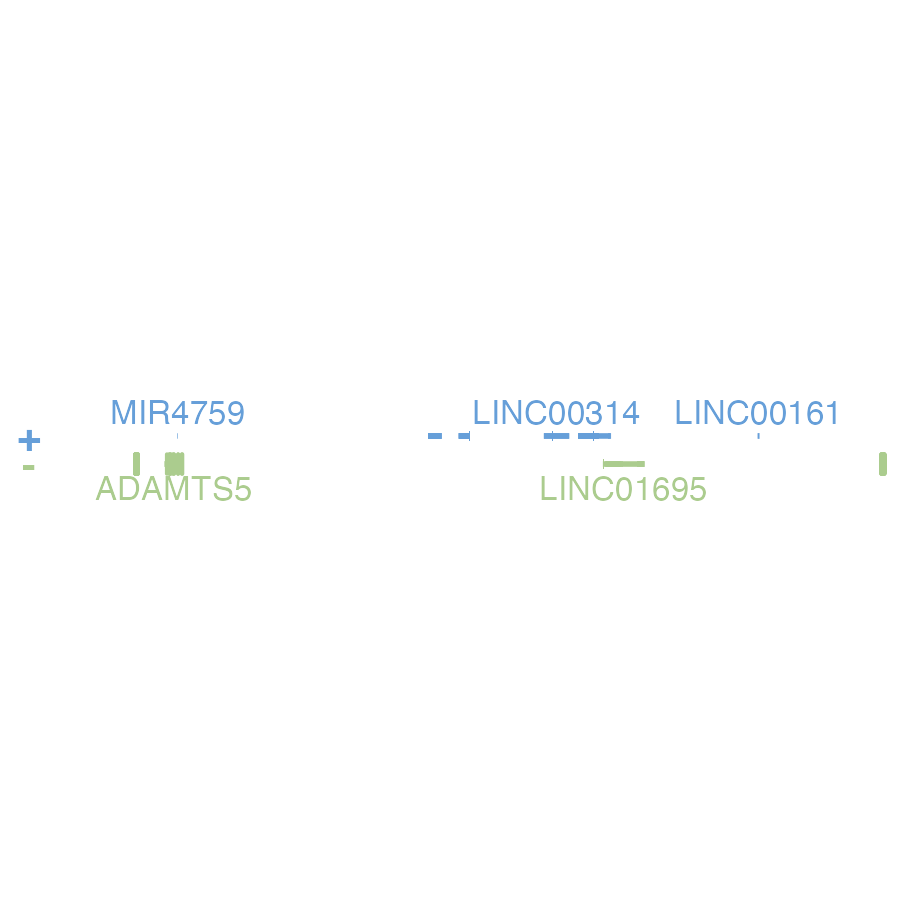
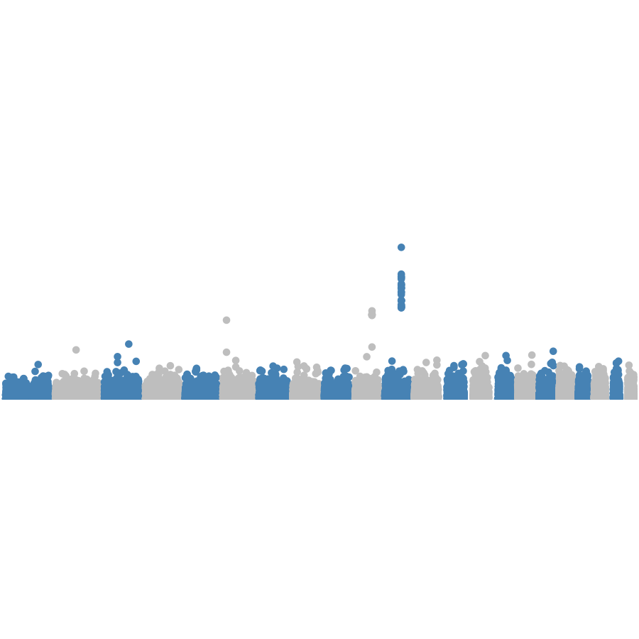
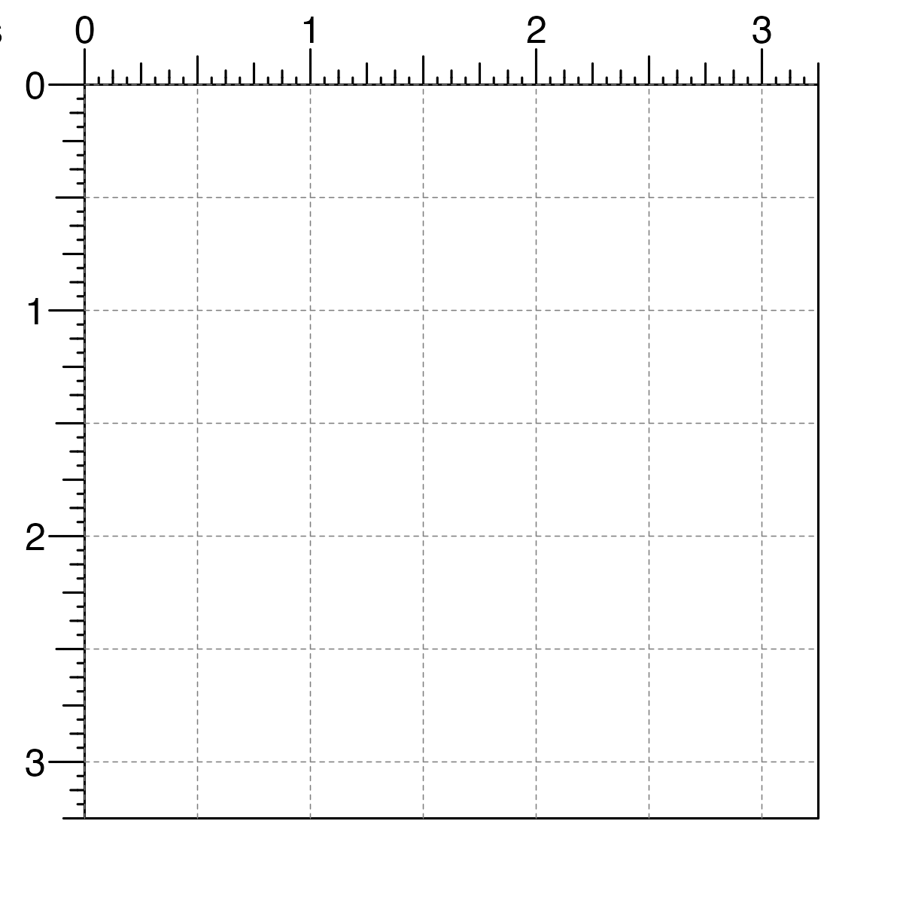
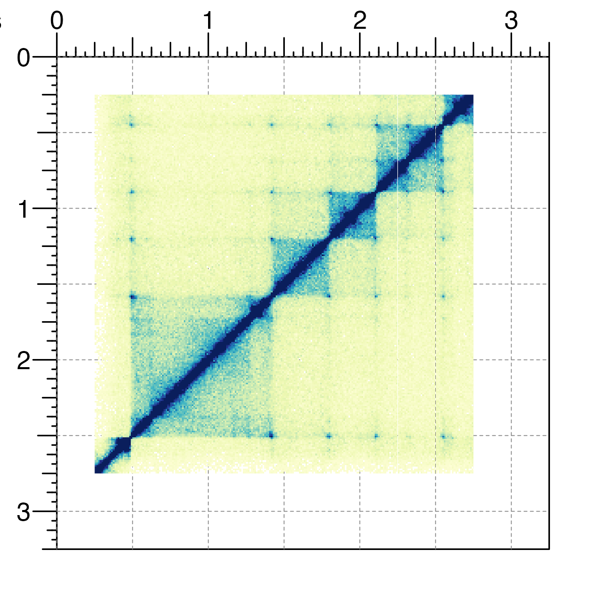
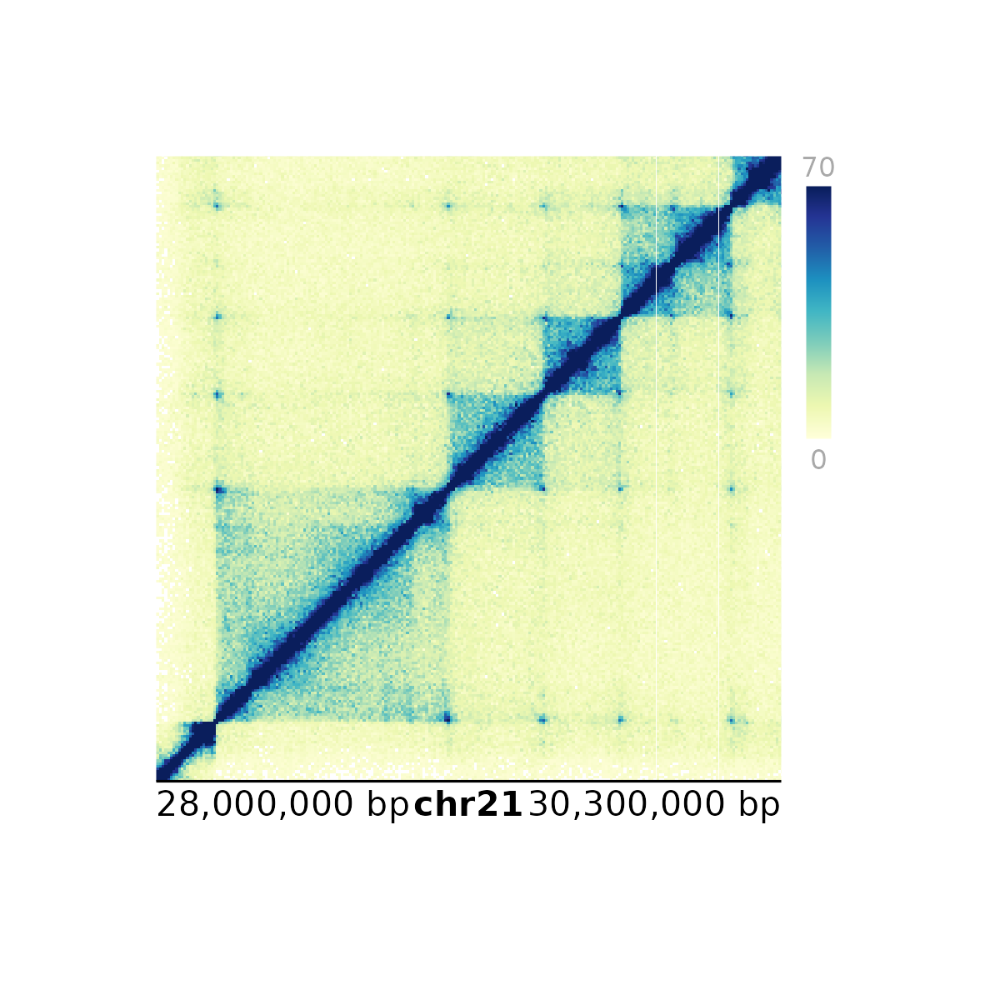

vignettes/introduction_to_plotgardener.Rmd
introduction_to_plotgardener.Rmdplotgardener is a coordinate-based, genomic
visualization package for R. Using grid graphics,
plotgardener empowers users to programmatically and
flexibly generate multi-panel figures. Tailored for genomics for a
variety of genomic assemblies, plotgardener allows users to
visualize large, complex genomic datasets while providing exquisite
control over the arrangement of plots.
plotgardener functions can be grouped into the following
categories:
Functions for creating plotgardener page layouts,
drawing, showing, and hiding guides, as well as placing plots on the
page. See The
plotgardener Page
Functions for quickly reading in large biological datasets. See Reading Data for plotgardener
Contains genomic plotting functions, functions for placing
ggplots and base plots, as well as functions
for drawing simple shapes. See Plotting
Multi-omic Data
Enables users to add annotations to their plots, such as legends, axes, and scales. See Plot Annotations
Functions that display plotgardener properties or
operate on other plotgardener functions, or constructors
for plotgardener objects. See plotgardener
Meta Functions
This vignette provides a quick start guide for utilizing
plotgardener. For in-depth demonstrations of
plotgardener’s key features, see the additional articles.
For detailed usage of each function, see the function-specific reference
examples with ?function()
(e.g. ?plotPairs()).
All the data included in this vignette can be found in the
supplementary package plotgardenerData.
plotgardener plotting functions contain 4 types of
arguments:
Data reading argument (data)
Genomic locus arguments (chrom,
chromstart, chromend,
assembly)
Placement arguments (x, y,
width, height, just,
default.units, …) that define where each plot resides on a
page
Attribute arguments that affect the data being plotted or the
style of the plot (norm, fill,
fontcolor, …) that vary between functions
The quickest way to plot data is to omit the placement arguments.
This will generate a plotgardener plot that fills up the
entire graphics window and cannot be annotated. These plots are
only meant to be used for quick genomic data inspection
and not as final plotgardener plots. The only
arguments that are required are the data arguments and locus arguments.
The examples below show how to quickly plot different types of genomic
data with plot defaults and included data types. To use your own data,
replace the data argument with either a path to the file or
an R object as described above.
## Load plotgardener
library(plotgardener)
## Load example Hi-C data
library(plotgardenerData)
data("IMR90_HiC_10kb")
## Quick plot Hi-C data
plotHicSquare(
data = IMR90_HiC_10kb,
chrom = "chr21", chromstart = 28000000, chromend = 30300000,
assembly = "hg19"
)
## Load plotgardener
library(plotgardener)
## Load example signal data
library(plotgardenerData)
data("IMR90_ChIP_H3K27ac_signal")
## Quick plot signal data
plotSignal(
data = IMR90_ChIP_H3K27ac_signal,
chrom = "chr21", chromstart = 28000000, chromend = 30300000,
assembly = "hg19"
)
## Load plotgardener
library(plotgardener)
## Load hg19 genomic annotation packages
library(TxDb.Hsapiens.UCSC.hg19.knownGene)
library(org.Hs.eg.db)
## Quick plot genes
plotGenes(
assembly = "hg19",
chrom = "chr21", chromstart = 28000000, chromend = 30300000
)
## Load plotgardener
library(plotgardener)
## Load hg19 genomic annotation packages
library(TxDb.Hsapiens.UCSC.hg19.knownGene)
## Load example GWAS data
library(plotgardenerData)
data("hg19_insulin_GWAS")
## Quick plot GWAS data
plotManhattan(
data = hg19_insulin_GWAS,
assembly = "hg19",
fill = c("steel blue", "grey"),
ymax = 1.1, cex = 0.20
)
plotgardener page
To build complex, multi-panel plotgardener figures with
annotations, we must:
plotgardener coordinate page with
pageCreate().
pageCreate(width = 3.25, height = 3.25, default.units = "inches")
x,
y, width, height,
just, default.units) in plotting functions and
save the output of the plotting function.
data("IMR90_HiC_10kb")
hicPlot <- plotHicSquare(
data = IMR90_HiC_10kb,
chrom = "chr21", chromstart = 28000000, chromend = 30300000,
assembly = "hg19",
x = 0.25, y = 0.25, width = 2.5, height = 2.5, default.units = "inches"
)
plotgardener plot objects by passing them into
the plot argument of annotation functions.
annoHeatmapLegend(
plot = hicPlot,
x = 2.85, y = 0.25, width = 0.1, height = 1.25, default.units = "inches"
)
annoGenomeLabel(
plot = hicPlot,
x = 0.25, y = 2.75, width = 2.5, height = 0.25, default.units = "inches"
)For more information about how to place plots and annotations on a
plotgardener page, check out the section Working
with plot objects.
When a plotgardener plot is ready to be saved and
exported, we can first remove all page guides that were made with
pageCreate():

We can then either use the Export toggle in the RStudio plot panel, or save the plot within our R code as follows:
pdf(width = 3.25, height = 3.25)
pageCreate(width = 3.25, height = 3.25, default.units = "inches")
data("IMR90_HiC_10kb")
hicPlot <- plotHicSquare(
data = IMR90_HiC_10kb,
chrom = "chr21", chromstart = 28000000, chromend = 30300000,
assembly = "hg19",
x = 0.25, y = 0.25, width = 2.5, height = 2.5, default.units = "inches"
)
annoHeatmapLegend(
plot = hicPlot,
x = 2.85, y = 0.25, width = 0.1, height = 1.25, default.units = "inches"
)
annoGenomeLabel(
plot = hicPlot,
x = 0.25, y = 2.75, width = 2.5, height = 0.25, default.units = "inches"
)
pageGuideHide()
dev.off()Please note that due to the implementation of
grid removal functions, using
pageGuideHide within a pdf call will result in
the rendering of a separate, new page with the plot
guides removed. To avoid this artifact, hide guides in
the pageCreate function call with
showGuides = FALSE.
For more detailed usage and examples, please refer to the other available vignettes.
We still have many ideas to add for a second version of
plotgardener including, but not limited to: grammar of
graphics style plot arguments and plot building, templates, themes, and
multi-plotting functions. If you have suggestions for ways we can
improve plotgardener, please let us know!
sessionInfo()
## R version 4.4.0 (2024-04-24)
## Platform: x86_64-pc-linux-gnu
## Running under: Red Hat Enterprise Linux 9.7 (Plow)
##
## Matrix products: default
## BLAS/LAPACK: /nas/longleaf/rhel9/apps/r/4.4.0/lib/libopenblas_haswellp-r0.3.27.so; LAPACK version 3.12.0
##
## locale:
## [1] LC_CTYPE=en_US.UTF-8 LC_NUMERIC=C
## [3] LC_TIME=en_US.UTF-8 LC_COLLATE=en_US.UTF-8
## [5] LC_MONETARY=en_US.UTF-8 LC_MESSAGES=en_US.UTF-8
## [7] LC_PAPER=en_US.UTF-8 LC_NAME=C
## [9] LC_ADDRESS=C LC_TELEPHONE=C
## [11] LC_MEASUREMENT=en_US.UTF-8 LC_IDENTIFICATION=C
##
## time zone: America/New_York
## tzcode source: system (glibc)
##
## attached base packages:
## [1] stats4 grid stats graphics grDevices utils datasets
## [8] methods base
##
## other attached packages:
## [1] org.Hs.eg.db_3.20.0
## [2] TxDb.Hsapiens.UCSC.hg19.knownGene_3.2.2
## [3] GenomicFeatures_1.58.0
## [4] AnnotationDbi_1.68.0
## [5] Biobase_2.66.0
## [6] GenomicRanges_1.58.0
## [7] GenomeInfoDb_1.42.3
## [8] IRanges_2.40.1
## [9] S4Vectors_0.44.0
## [10] BiocGenerics_0.52.0
## [11] plotgardenerData_1.12.0
## [12] plotgardener_1.15.1
##
## loaded via a namespace (and not attached):
## [1] tidyselect_1.2.1 blob_1.2.4
## [3] dplyr_1.1.4 farver_2.1.2
## [5] Biostrings_2.74.1 bitops_1.0-9
## [7] fastmap_1.2.0 RCurl_1.98-1.17
## [9] GenomicAlignments_1.42.0 XML_3.99-0.18
## [11] digest_0.6.37 lifecycle_1.0.4
## [13] plyranges_1.26.0 KEGGREST_1.46.0
## [15] RSQLite_2.3.11 magrittr_2.0.3
## [17] compiler_4.4.0 rlang_1.1.6
## [19] sass_0.4.10 tools_4.4.0
## [21] yaml_2.3.10 data.table_1.17.4
## [23] rtracklayer_1.66.0 knitr_1.50
## [25] S4Arrays_1.6.0 htmlwidgets_1.6.4
## [27] bit_4.6.0 curl_6.2.3
## [29] DelayedArray_0.32.0 RColorBrewer_1.1-3
## [31] abind_1.4-8 BiocParallel_1.40.2
## [33] withr_3.0.2 purrr_1.0.4
## [35] desc_1.4.3 Rhdf5lib_1.28.0
## [37] ggplot2_3.5.2 scales_1.4.0
## [39] dichromat_2.0-0.1 SummarizedExperiment_1.36.0
## [41] cli_3.6.5 rmarkdown_2.29
## [43] crayon_1.5.3 ragg_1.4.0
## [45] generics_0.1.4 rstudioapi_0.17.1
## [47] httr_1.4.7 rjson_0.2.23
## [49] DBI_1.2.3 cachem_1.1.0
## [51] rhdf5_2.50.2 zlibbioc_1.52.0
## [53] parallel_4.4.0 ggplotify_0.1.2
## [55] XVector_0.46.0 restfulr_0.0.15
## [57] matrixStats_1.5.0 yulab.utils_0.2.4
## [59] vctrs_0.6.5 Matrix_1.7-3
## [61] jsonlite_2.0.0 gridGraphics_0.5-1
## [63] bit64_4.6.0-1 systemfonts_1.2.3
## [65] strawr_0.0.92 jquerylib_0.1.4
## [67] glue_1.8.0 pkgdown_2.1.3
## [69] codetools_0.2-20 gtable_0.3.6
## [71] BiocIO_1.16.0 UCSC.utils_1.2.0
## [73] tibble_3.2.1 pillar_1.10.2
## [75] rappdirs_0.3.3 htmltools_0.5.8.1
## [77] rhdf5filters_1.18.1 GenomeInfoDbData_1.2.13
## [79] R6_2.6.1 textshaping_1.0.1
## [81] evaluate_1.0.3 lattice_0.22-7
## [83] png_0.1-8 Rsamtools_2.22.0
## [85] memoise_2.0.1 bslib_0.9.0
## [87] Rcpp_1.1.1-1.1 SparseArray_1.6.2
## [89] xfun_0.52 fs_1.6.6
## [91] MatrixGenerics_1.18.1 pkgconfig_2.0.3